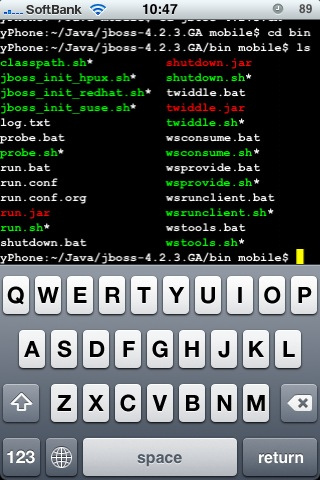
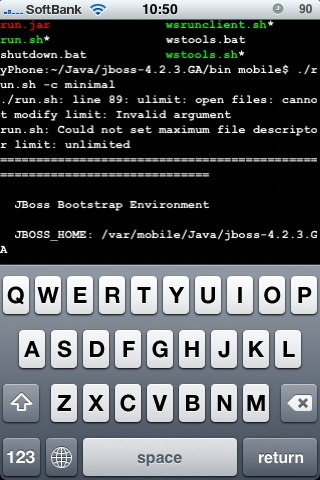
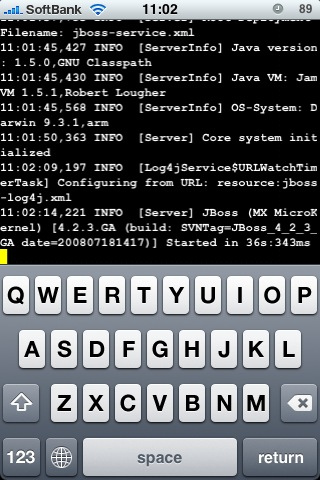

Running JBoss on iPhone
Have you got your iPhone? I got mine 2 weeks ago. I'm pretty much satisfied with it despite the short battery life and slooow Japanese input method that are sometimes irritating me.
Did you know that you can install a flavor of JVM called JamVM to a Jailbroken iPhone? To me, It is inevitable to Jailbreak my iPhone so that I can play with opensource iPhone wares and getting Java softwares running on my iPhone.
I tried to install JBoss Application server to my iPhone and I call the result "Partly success". Here's a movie showing JBoss running on my iPhone.
iPhone has got 128MB of main memory and I believe it should be enough for running the "default" configuration which contains JBossWeb, EJB3 container and so on. However, I only could run the "minimal" configuration. In fact, I could boot the JBoss microkernel, but I couldn't plug-in any practical MBean to the kernel. Deploying JBossWeb to the minimal configuration caused OutOfMemoryError which means that the JVM ran out of memory. I'm guessing that it's because of the unstableness and inefficiency of JamVM. Once OpenJDK ported to iPhone, it might be possible to run full featured JBoss on your iPhone. Stay tuned!
 listing JBoss AS 4.2.3's bin directory  starting up JBoss  JBoss in my pocket! Here's the console output../run.sh: line 89: ulimit: open files: cannot modify limit: Invalid argument run.sh: Could not set maximum file descriptor limit: unlimited ========================================================================= JBoss Bootstrap Environment JBOSS_HOME: /var/mobile/Java/jboss-4.2.3.GA JAVA: java JAVA_OPTS: -Dprogram.name=run.sh -Xms32m -Xmx32m -Dsun.rmi.dgc.client.gcInterval=3600000 -Dsun.rmi.dgc.server.gcInterval=3600000 CLASSPATH: /var/mobile/Java/jboss-4.2.3.GA/bin/run.jar ========================================================================= 00:28:04,510 INFO [Server] Starting JBoss (MX MicroKernel)... 00:28:04,524 INFO [Server] Release ID: JBoss [Trinity] 4.2.3.GA (build: SVNTag=JBoss_4_2_3_GA date=200807181417) 00:28:04,553 INFO [Server] Home Dir: /private/var/mobile/Java/jboss-4.2.3.GA 00:28:04,556 INFO [Server] Home URL: file:/private/var/mobile/Java/jboss-4.2.3.GA/ 00:28:04,573 INFO [Server] Patch URL: null 00:28:04,575 INFO [Server] Server Name: minimal 00:28:04,578 INFO [Server] Server Home Dir: /private/var/mobile/Java/jboss-4.2.3.GA/server/minimal 00:28:04,583 INFO [Server] Server Home URL: file:/private/var/mobile/Java/jboss-4.2.3.GA/server/minimal/ 00:28:04,587 INFO [Server] Server Log Dir: /private/var/mobile/Java/jboss-4.2.3.GA/server/minimal/log 00:28:04,593 INFO [Server] Server Temp Dir: /private/var/mobile/Java/jboss-4.2.3.GA/server/minimal/tmp 00:28:04,602 INFO [Server] Root Deployment Filename: jboss-service.xml 00:28:10,913 INFO [ServerInfo] Java version: 1.5.0,GNU Classpath 00:28:10,916 INFO [ServerInfo] Java VM: JamVM 1.5.1,Robert Lougher 00:28:10,919 INFO [ServerInfo] OS-System: Darwin 9.3.1,arm 00:28:15,044 INFO [Server] Core system initialized 00:28:31,407 INFO [Log4jService$URLWatchTimerTask] Configuring from URL: resource:jboss-log4j.xml 00:28:35,626 INFO [Server] JBoss (MX MicroKernel) [4.2.3.GA (build: SVNTag=JBoss_4_2_3_GA date=200807181417)] Started in 30s:994msI also tried JBoss AS 5.0 CR1, but failed with ArrayIndexOutOfBoundsException. The exception stacktrace is as following:
JBOSS_HOME: /var/mobile/Java/jboss-5.0.0.CR1 JAVA: java JAVA_OPTS: -Dprogram.name=run.sh -Xms32m -Xmx32m -Dorg.jboss.resolver.warning=true -Dsun.rmi.dgc.client.gcInterval=3600000 -Dsun.rmi.dgc.server.gcInterval=3600000 CLASSPATH: /var/mobile/Java/jboss-5.0.0.CR1/bin/run.jar ========================================================================= 00:47:24,519 INFO [ServerImpl] Starting JBoss (Microcontainer)... 00:47:24,535 INFO [ServerImpl] Release ID: JBoss [Morpheus] 5.0.0.CR1 (build: SVNTag=JBoss_5_0_0_CR1 date=200806301254) 00:47:24,596 INFO [ServerImpl] Home Dir: /private/var/mobile/Java/jboss-5.0.0.CR1 00:47:24,599 INFO [ServerImpl] Home URL: file:/private/var/mobile/Java/jboss-5.0.0.CR1/ 00:47:24,603 INFO [ServerImpl] Library URL: file:/private/var/mobile/Java/jboss-5.0.0.CR1/lib/ 00:47:24,621 INFO [ServerImpl] Patch URL: null 00:47:24,623 INFO [ServerImpl] Server Name: minimal 00:47:24,626 INFO [ServerImpl] Server Home Dir: /private/var/mobile/Java/jboss-5.0.0.CR1/server/minimal 00:47:24,632 INFO [ServerImpl] Server Home URL: file:/private/var/mobile/Java/jboss-5.0.0.CR1/server/minimal/ 00:47:24,636 INFO [ServerImpl] Server Data Dir: /private/var/mobile/Java/jboss-5.0.0.CR1/server/minimal/data 00:47:24,640 INFO [ServerImpl] Server Temp Dir: /private/var/mobile/Java/jboss-5.0.0.CR1/server/minimal/tmp 00:47:24,644 INFO [ServerImpl] Server Config URL: file:/private/var/mobile/Java/jboss-5.0.0.CR1/server/minimal/conf/ 00:47:24,649 INFO [ServerImpl] Server Library URL: file:/private/var/mobile/Java/jboss-5.0.0.CR1/server/minimal/lib/ 00:47:24,656 INFO [ServerImpl] Root Deployment Filename: jboss-service.xml Failed to boot JBoss: java.lang.RuntimeException: Unable to create a KernelInitializer based on the specified KernelConfig at org.jboss.kernel.KernelFactory.createKernelInitializer(KernelFactory.java:156) at org.jboss.kernel.KernelFactory.assembleNewKernel(KernelFactory.java:99) at org.jboss.kernel.KernelFactory.newInstance(KernelFactory.java:67) at org.jboss.kernel.plugins.bootstrap.AbstractBootstrap.bootstrap(AbstractBootstrap.java:114) at org.jboss.kernel.plugins.bootstrap.AbstractBootstrap.run(AbstractBootstrap.java:83) at org.jboss.bootstrap.microcontainer.ServerImpl.doStart(ServerImpl.java:79) at org.jboss.bootstrap.AbstractServerImpl.start(AbstractServerImpl.java:398) at org.jboss.Main.boot(Main.java:209) at org.jboss.Main$1.run(Main.java:544) at java.lang.Thread.run(Thread.java:743) Caused by: java.lang.ArrayIndexOutOfBoundsException: 0 at org.jboss.reflect.plugins.MethodInfoImpl.<init>(MethodInfoImpl.java:103) at org.jboss.reflect.plugins.introspection.ReflectMethodInfoImpl.<init>(ReflectMethodInfoImpl.java:69) at org.jboss.reflect.plugins.introspection.IntrospectionTypeInfoFactoryImpl.getMethods(IntrospectionTypeInfoFactoryImpl.java:207) at org.jboss.reflect.plugins.ClassInfoImpl.getDeclaredMethods(ClassInfoImpl.java:394) at org.jboss.beans.info.plugins.AbstractBeanInfoFactory.getMethods(AbstractBeanInfoFactory.java:232) at org.jboss.beans.info.plugins.AbstractBeanInfoFactory.getBeanInfo(AbstractBeanInfoFactory.java:153) at org.jboss.beans.info.plugins.AbstractBeanInfoFactory.getBeanInfo(AbstractBeanInfoFactory.java:124) at org.jboss.config.plugins.AbstractConfiguration.getBeanInfo(AbstractConfiguration.java:69) at org.jboss.kernel.plugins.config.AbstractKernelConfig.getBeanInfo(AbstractKernelConfig.java:65) at org.jboss.kernel.plugins.config.property.PropertyKernelConfig.getImplementation(PropertyKernelConfig.java:175) at org.jboss.kernel.plugins.config.property.PropertyKernelConfig.createKernelInitializer(PropertyKernelConfig.java:120) at org.jboss.kernel.KernelFactory.createKernelInitializer(KernelFactory.java:150) ...9 more 00:47:27,513 INFO [ServerImpl] Runtime shutdown hook called, forceHalt: true 00:47:27,553 INFO [ServerImpl] Shutdown complete Shutdown complete Halting VMConclusion: - iPhone and JamVM are smart enough to host JBoss AS instance - currently JBoss AS 5.0 doesn't boot on JamVM / iPhone
Re: Running JBoss on iPhone
I guess I can reproduce this with having JamVM on my laptop?
As it looks like JamVM treats annotations differently than other JVMs.
I try to make MethodInfoImpl handle this kind of annotations arrays,
but I suspect there might be other similar issues.
Will post my findings if I can get JamVM run on my machine.